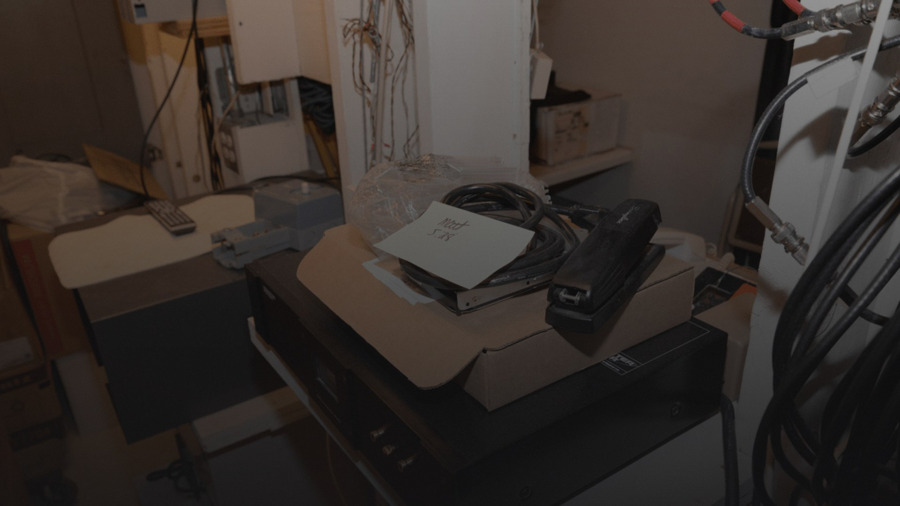
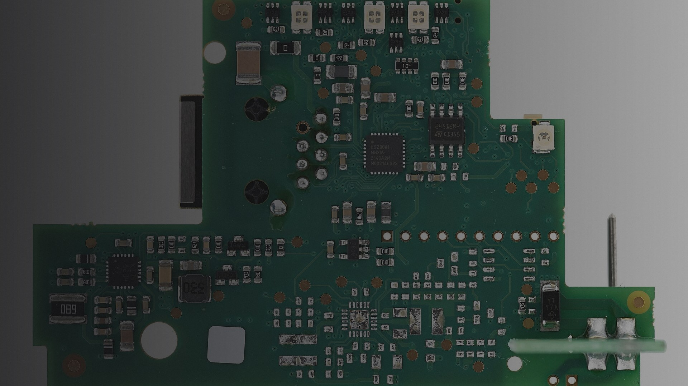
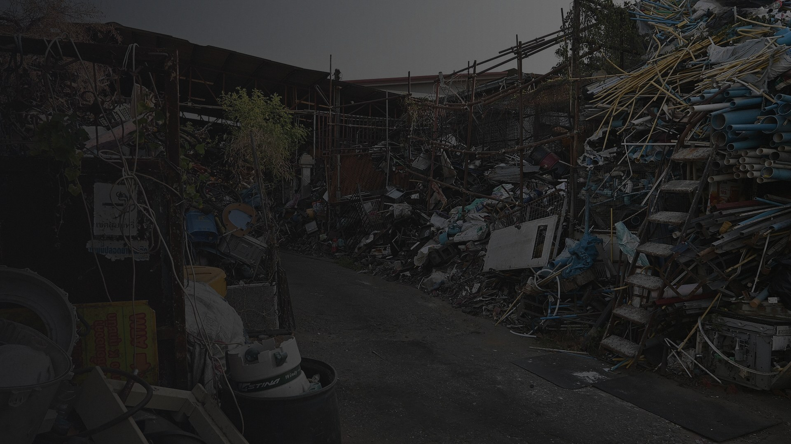
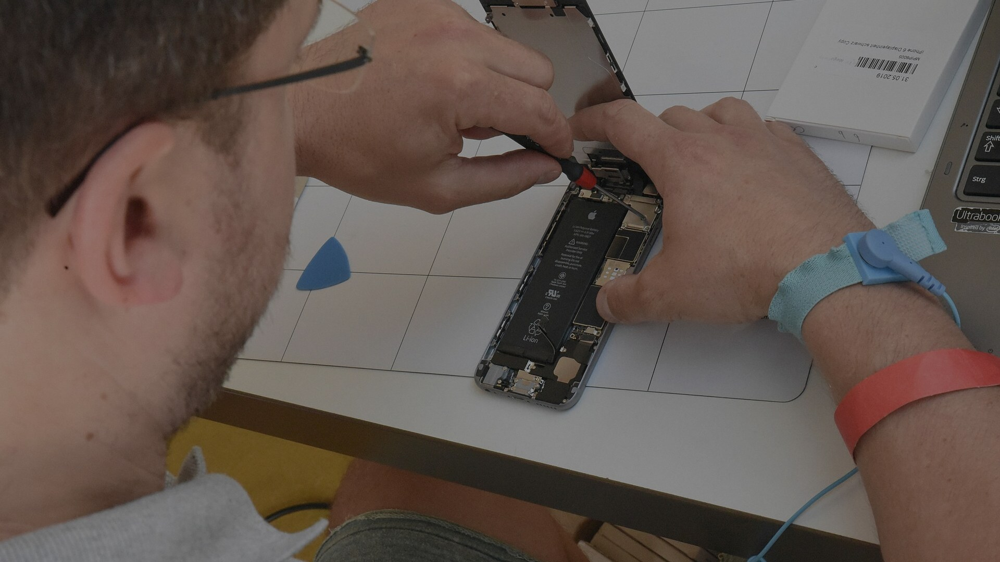
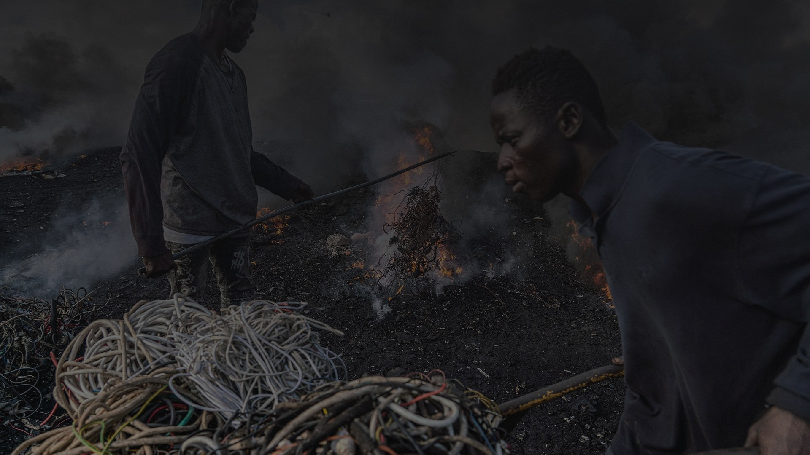

3.4 dead devices per household. Sitting quietly.
Leaking slowly. Waiting for nowhere to go.
E-Waste and the Right to Repair:
How Solving a Local Problem Drives Global Action

Planned obsolescence isn't a bug — it's the business model. Phones designed to last 7 years are replaced in 2.5.
1.5 billion smartphones sold yearly — not because 1.5 billion broke.
Glued batteries. Proprietary screws. Software that bricks older hardware on purpose.

E-waste is 2% of landfill volume — but 70% of the heavy metals. And the neighborhoods closest to dumps? Disproportionately low-income.
→ soil contamination → groundwater → children

The Right to Repair movement says: if you bought it, you own it — and you deserve to fix it.

The fastest-growing waste stream on Earth.
the gap (44Mt) is heavier than every commercial aircraft ever built. combined.
Global E-Waste Monitor 2020
Forti, Baldé, Kuehr & Bel
UNU/UNITAR-SCYCLE · ITU · ISWA
Our "recycled" electronics don't disappear. They travel to where regulations are weakest and labor is cheapest.

"Individual action → systemic pressure → structural change"
France's repairability index shifted consumer behavior within 18 months of implementation.
07the local fix is the global fix._